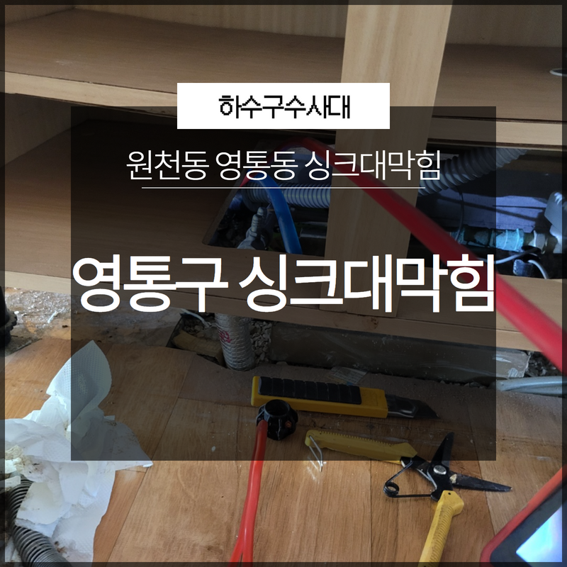
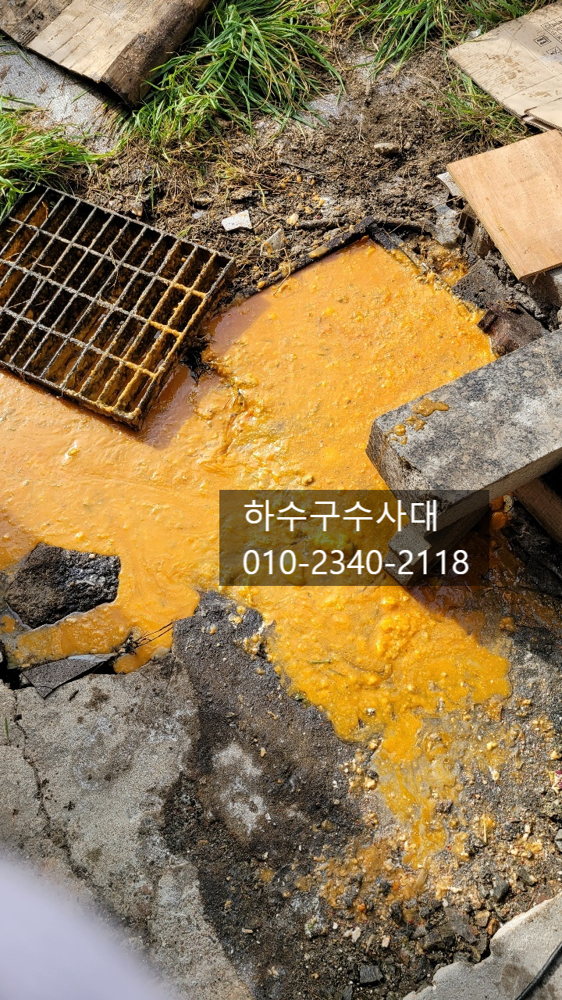
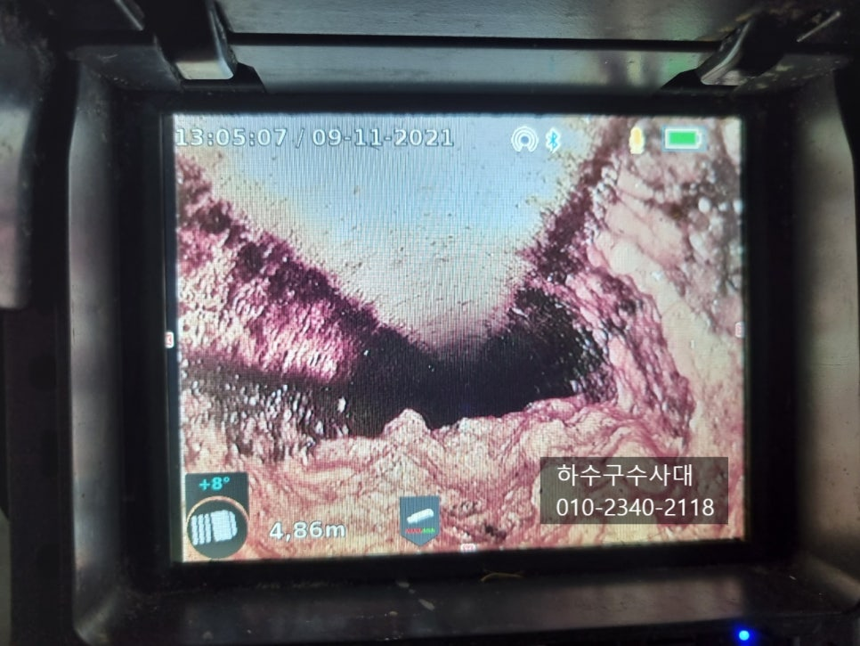
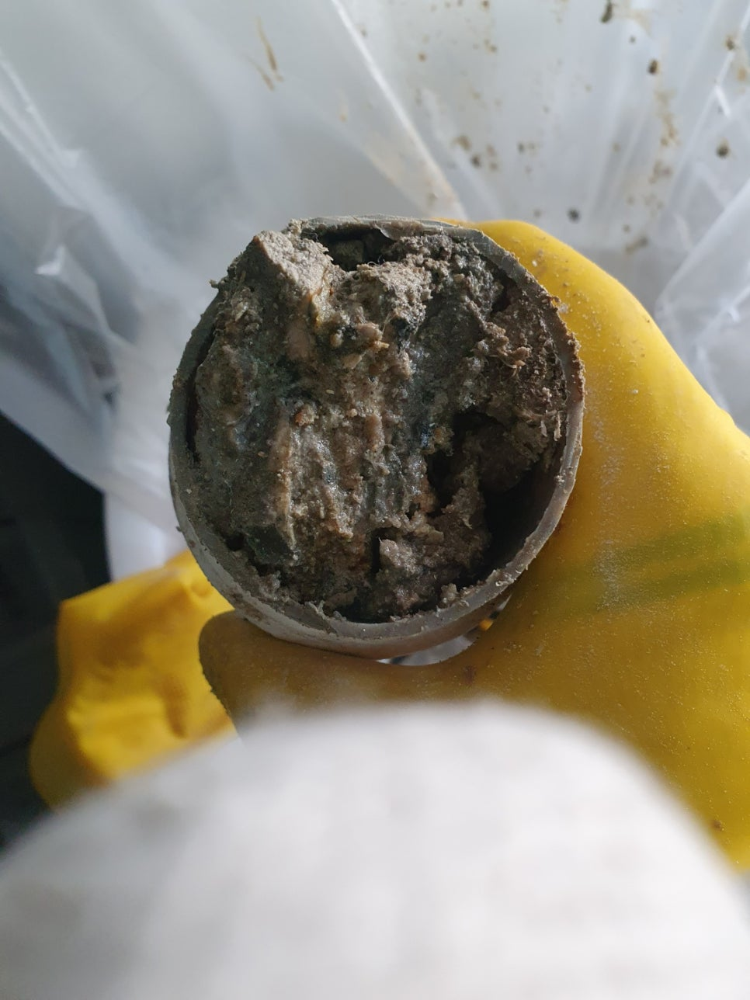
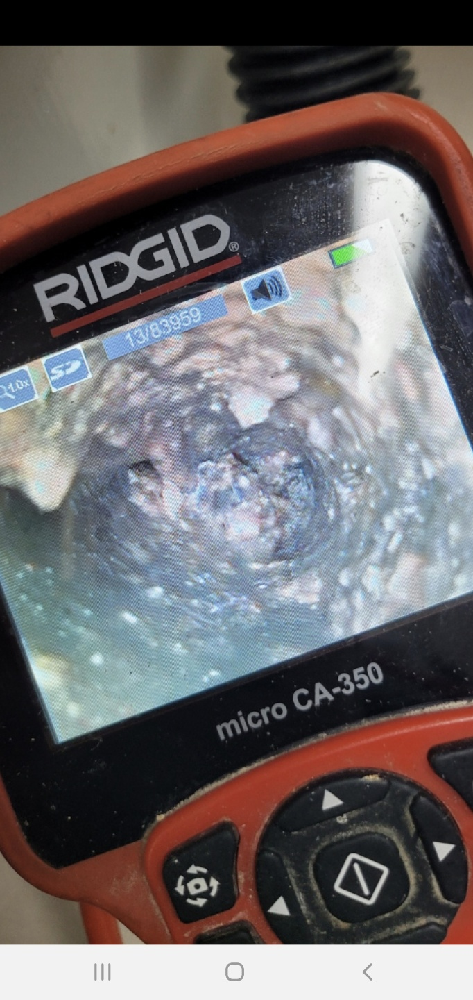
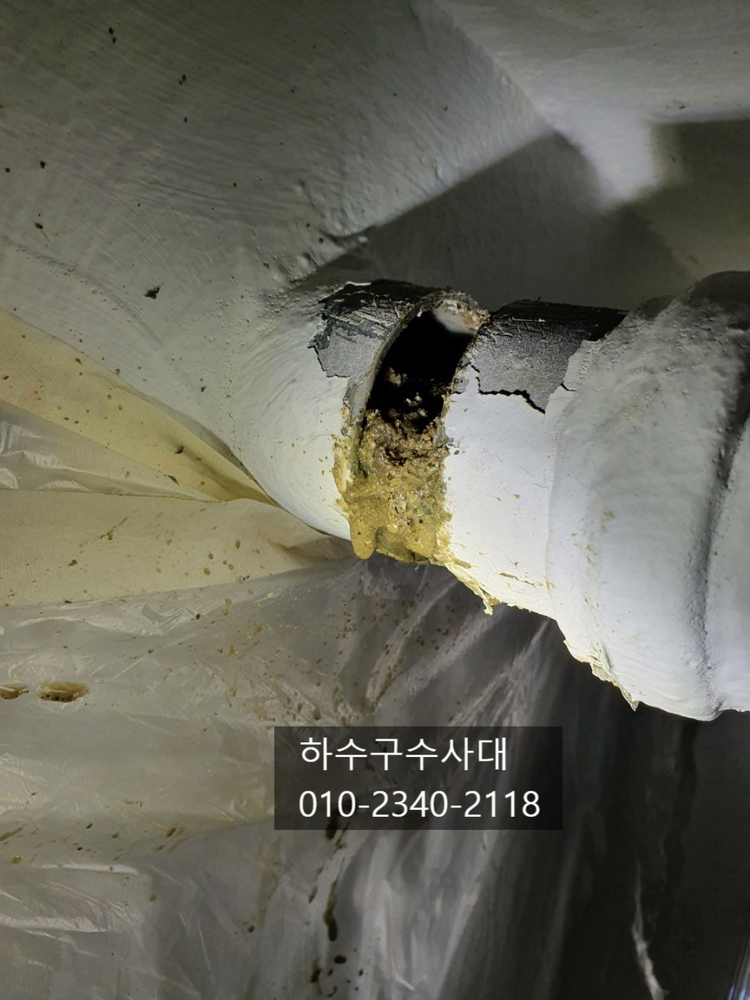
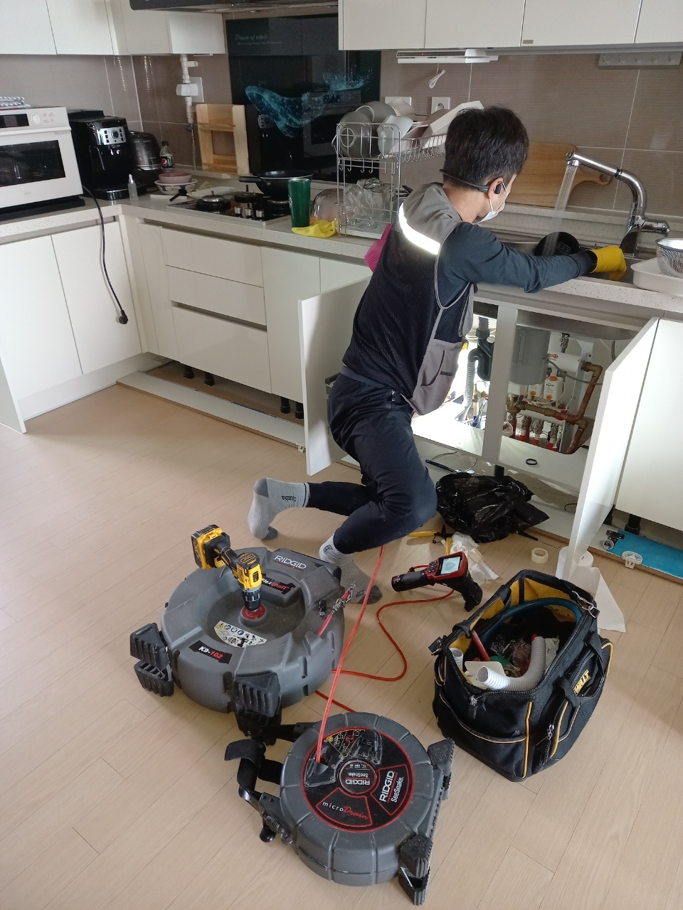

🏠 영통구 싱크대막힘 원천동 영통동 신속하게 전문가를 통해 문제 해결!
수원 싱크대막힘 전문 시공 후기

📋 작업 개요
- 위치: 수원
- 서비스 유형: 싱크대막힘, 하수구막힘, 배관막힘, 뚫는업체, 고압세척
- 작업 일시: 2023. 1. 11. 21:51
- 업체명: 하수구수사대 (010-5615-2118)
🔍 문제 상황
수원하수구막힘 수원하수구설비 배관업체
안녕하세요
"하수구수사대" 인사드립니다.
우리가 일상적으로 음식을 할때 사용하는
싱크대나 씻고 빨래를 하는 욕실 또는 세탁실 하수구 등등
이 있는데요 어느한곳이라도 하수구가 막히게되면
음식을 할수 없거나 씻지 못하거나 빨래를
할수 없다면 굉장히 불편합니다.
하수구는 그냥 물이 흘러나가는 곳이니
신경을 쓰지 않게되고 보이지 않는곳이라
관리를 소홀히 할수밖에 없는데요

🔎 원인 분석
💡 전문가 진단: 하수구수사대010-2340-2118
그러다보니 하수구배관에 슬러지가 쌓여
막히게 되거나 악취가 올라오는 경우가 많습니다.
막힘의 원인은 다양한데요 기름슬러지,석회,시멘트.폼,행주,
수세미 등등 다양한 원인이 있습니다.
보통은 배관이 길고 구배가 좋지않아 물이 고여있는구간에
슬러지가 많이 쌓이게 되는데요 이는 관리를 통해서
막힘을 예방할수 있는 부분이지만 보이지 않는
배관을 관리하기란 쉽지않다는게 일반적입니다.
막힌하수구를 뚫는 방법은 여러가지가 있는데요
석션,스프링,플렉스샤프트,고압세척 등등 다양한
방법들이 있습니다. 흔히 많이들 알고 있는 장비로는
전동스프링이 있는데요 꽉막힌하수구를 뚫는데는

🔧 작업 과정
효과적인 장비입니다.
내시경카메라장비도 여러가지가 있는데요
가격에따라 성능의 차이가 있기때문에 어려운 배관일수록
고가의 장비가 투입되는 경우도 많습니다.
자주막히는 하수구의 경우 배관은 내시경카메라를
통해 원인을 찾아 해결하는게 중요하므로
내시경카메라가 없다면 원인을 완벽하게 해결하기는
불가능합니다.
배관에 구멍을 내고 작업을 하기도 하는데요
간혹 이물질이 배관밖으로 넘칠수 있기때문에
보양작업을 철저히 하여 주변이 지저분해지지 않게
깔끔하게 작업하는것도 중요하다고 생각합니다.
항상 작업 마무리는 내시경카메라를 통해
배관상태를 체크해 보는것이 중요한데요
작업이 잘 되었는지! 배관구조가 어떻게 이어졌는지!
구배는 잘 되어있는지! 확인을 하고
관리를 하면 막힘을 예방할수 있기 때문입니다.
저희 " 하수구수사대 " 는 최첨단장비를 보유하고 있으며


✅ 작업 완료
1년AS를 보증해 드리고 있습니다.
하수구가 막혀 전문가의 도움이 필요하시면
언제든지 연락 주시기 바랍니다^^
하수구수사대
010-2340-2118




⚠️ 주방 싱크대 배관 막힘 예방 수칙
- ✅ 기름기가 묻은 식기나 프라이팬은 설거지 전 키친타올로 반드시 기름때를 닦아내세요.
- ✅ 주기적으로 싱크대 개수대에 뜨거운 물을 가득 받아 한 번에 내려 배관 내부 기름을 씻어내세요.
- ✅ 배수구 거름망을 미세한 필터로 사용하시고 음식물 찌꺼기가 틈으로 새어 들지 않게 관리하세요.
- ✅ 베이킹소다와 식초를 뜨거운 물과 함께 일주일에 한 번씩 부어주면 배관 살균과 막힘 예방에 좋습니다.
💡 핵심 정리
- 확실한 장비 작업(내시경 점검 및 샤프트 스케일링)으로 원인을 뿌리 뽑습니다.
- 작업 후 1년 이내에 동일한 부위 재발 시 100% 무상 A/S 서비스를 보장합니다.
- 서울 · 경기 · 인천 전 지역에 24시간 언제든 긴급 출동할 수 있도록 항시 대기 중입니다.
❓ 자주 묻는 질문 (FAQ)
🚨 수원 싱크대막힘 문제로 고민이신가요?
정확한 원인 진단과 확실한 시공으로 재발 없는 해결을 약속드립니다.
24시간 긴급 출동 | 서울 · 경기 · 인천 전지역 | 1년 내 재발 시 무상 A/S